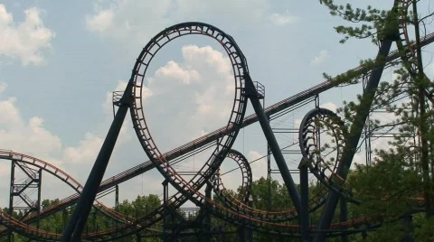

Arrow Development is an amusement ride construction company founded in 1945 by Angus "Andy" Anderson, Ed Morgan, William Hardiman, and Karl Bacon. The company's first ride was a merry go round at central park which then allowed them to get a job with Disney to create their beginning ride at their new park, Disneyland. The most notable ride was the matterhorn bobsled thrill ride. The company was later known for their looping coaster and mega lopper models in the 1980s. Their method of design tracks was tangent radius design i.e their rides were made of using circles and lines as each element had a constant curve.

Bolliger and Mabillard is an amusement ride construction company founded in 1988 by Walter Bolliger and Claude Mabillard after they split off from their former company Givinola. The first ride that the company made after the split was Shockwave at Six flags Magic Mountain and Vortex at Kings Island in their first year. Both of these models were the stand up model which is one of ten different models B&M offers: Stand up, inverted, Hyper, Flying, Sit Down, Family, Dive, Floorless and Wing. The most technologically advanced coset is the flying coaster made by B&M, which has led to low capacity due to difficult restraints and high costs for building and operating.

Rocky Mountain Construction or RMC for short is an American amusement ride construction company founded in 2001 by Fred Grubb and Suanne Dedmon. Fred Grubb got his start in construction by building a zoo exhibition and gold courses. In 2009 the team brought on ride designer Alan Schilke who had previosly design the 4th dimension coaster X at Arrow Development. in 2011 was when the company had built their first roller coaster using their new IBox track to turn old wooden coaster into new state of the art Hybrid coasters. In 2021 RMC showcased their new Raptor and t-rex tracks which are single rail coasters which keep the rides cheaper to produce and develop.

Vekoma or as it was known as at the time Veld Koning Machinefabriek a dutch company foned in the 1950s, after 1965 Vekoma got it's new name after the gold mines closing. In 1970 was when Vekoma became an amusement ride construction company working for Arrow Development when it was trying to install a ride in europe however after 1975 the started making their own coasters. Vekoma's most infamous model was its Suspended Looping Coaster or SLC for short. At the time these rides were praised but now the restraints used aren't the best So now Vekoma are replacing them with their new models